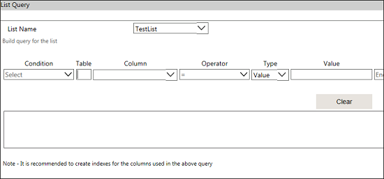
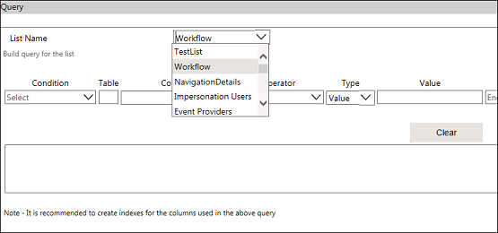
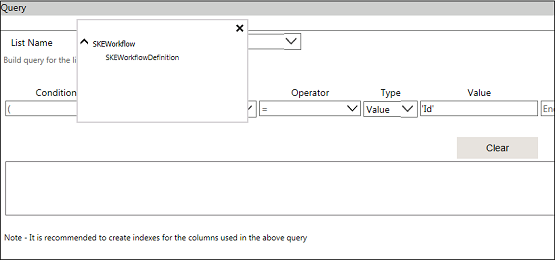
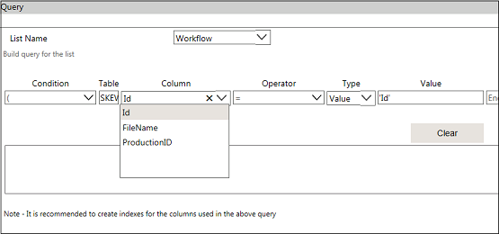
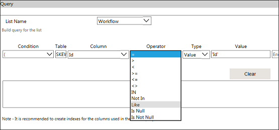
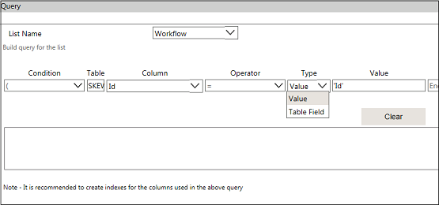
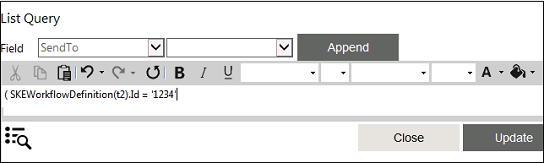

No
List Navigator: Query Builder
You can build query in this window.
To open this window, click the icon for the 'List Query' property.

The following are the field values for List Query window:
- List Name - Select the list from List Name drop-down list.
- Table - By clicking on this textbox, a pop up allows you to select the corresponding table for query. The respective table name will display in the pop up window based on the list selected by the user.
- Column - You can select this drop-down list to select the column or field of the corresponding list.
- Operator - You can select this drop-down list to select an operator (either one of =,>, <,>=, <=, <>, IN, Not IN, Like) to build the query.
- Type - You can select this drop-down list to select a type. The value is automatically displayed in the textbox.
- Condition - You can select this drop-down list to select the condition [either of End, And, Or, '),' '('].
- Add - You can click this button to add a query in the field.
- Clear - You can click this button to clear the query contents.
- OK - You can click this button to save this query.
- Close - You can click this button to close this window.
Example:
Retrieve the records whose title is starts from 'C' and 'B' in Product Categories list.
The following steps to be performed:
- Click the icon to build the query for the list 'Product Categories'.
- Select a list name from the List Name drop-down list.

- Click on Table, the pop up window allows to select the table from the available list.

- Select the table name. The table name appears in the textbox.
- Select the column name from the Column drop-down list.

- Select an operator from Operator drop-down list.

- Select a type from the Type drop-down list.

- Type a value in the Value textbox.
- Select a condition operator from the Condition drop-down list.
- Click Add to add the condition in textfield.
- Repeat the steps if required.
- Click OK to save the query. The build query appears in the List Query window.

- You can replace the value for the query, with variables. To replace, select the text/value to be replaced and then select the respective field.
- Click Update.
- Click Save in the Activity Properties window of the List Navigator activity.
Note: If the query returns more than one item of list for the XML variable, then you must have XML variable of type XML List Iterator for the list to loop through.